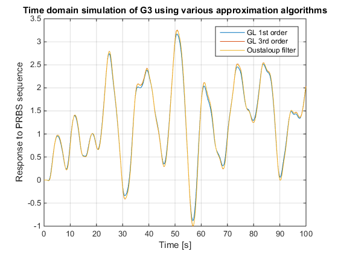
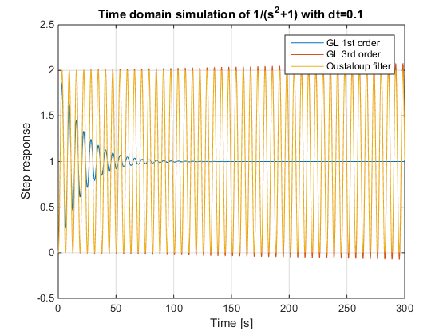
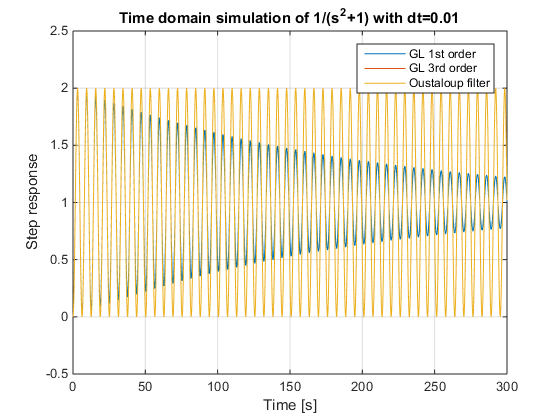

Tests for the GL solver vs. Oustaloup approximations and regular TFs
%%%%%%%%%%%%%%%%%%%%%%%%%%%%%%%%%%%%%%%%%%%%%%%%%%%%%%%%%%%%%%%%%%%%
Run this script cell-by-cell for a better informational flow
%%%%%%%%%%%%%%%%%%%%%%%%%%%%%%%%%%%%%%%%%%%%%%%%%%%%%%%%%%%%%%%%%%%%
NB! Running this script will CLEAR your MATLAB workspace!
----- ----------------
%%%%%%%%%%%%%%%%%%%%%%%%%%%%%%%%%%%%%%%%%%%%%%%%%%%%%%%%%%%%%%%%%%%%Contents
Complex system approximation with Oustaloup's recursive filter
acl;
disp('Loading the provided testsets...');
loadsets;
disp('Complex system approximation with Oustaloup''s recursive filter');
disp(' ');
disp('The system is');
disp(' ');
G3
disp(' ');
disp('We are going to simulate it using GL1, GL3, and OUSTAPP/LSIM methods');
disp('Please be aware that the precision of the Oustaloup filter approximations');
disp('will be affected by the settings in the configuration file. To see or');
disp('change these settings, please run fomcon(''config'')');
disp(' ');
opts = struct;
opts.GL_Order = 1;
uref = refgen('prbs', [], 100, 'Ts', 0.05);
u = uref.u;
t = uref.t;
y_gl1 = lsim(G3, u, t, opts);
opts.GL_Order = 3;
y_gl3 = lsim(G3, u, t, opts);
H3 = oustapp(G3);
y_oust3 = lsim(H3, u, t);
figure;
plot(t, y_gl1);
hold on;
plot(t, y_gl3);
plot(t, y_oust3);
grid;
xlabel('Time [s]');
ylabel('Response to PRBS sequence');
title('Time domain simulation of G3 using various approximation algorithms');
legend({'GL 1st order', 'GL 3rd order', 'Oustaloup filter'});
Loading the provided testsets...
All test sets loaded successfully.
Complex system approximation with Oustaloup's recursive filter
The system is
Fractional-order transfer function:
-2s^{0.63}+4
---------------------------------------------------
2s^{3.501}+3.8s^{2.42}+2.6s^{1.798}+2.5s^{1.31}+1.5
We are going to simulate it using GL1, GL3, and OUSTAPP/LSIM methods
Please be aware that the precision of the Oustaloup filter approximations
will be affected by the settings in the configuration file. To see or
change these settings, please run fomcon('config')

Tests for marginally stable integer-order systems
Complex system approximation with Oustaloup's recursive filter
acl;
disp('Simulating a marginally stable system 1/(s^2+1)');
loadsets;
s = tf('s');
G = 1/(s^2+1);
G = fotf(G);
disp(' ');
disp('We are going to simulate it using GL1, GL3, and OUSTAPP/LSIM methods.');
disp('The key point is that the system is a FOTF so it will be simulated with');
disp('the provided GL solver.');
disp(' ');
disp('In this case, the settings in FOMCON config will not affect the');
disp('approximation, because the function returned will be the original one.');
disp('However, the simulation time step size does matter most profoundly.');
disp(' ');
disp('First, let''s try a step size dt=0.1');
opts = struct;
opts.GL_Order = 1;
t = 0:0.1:300;
u = ones(size(t));
y_gl1 = lsim(G, u, t, opts);
opts.GL_Order = 3;
y_gl3 = lsim(G, u, t, opts);
H3 = oustapp(G);
y_oust3 = lsim(H3, u, t);
figure;
plot(t, y_gl1);
hold on;
plot(t, y_gl3);
plot(t, y_oust3);
grid;
xlabel('Time [s]');
ylabel('Step response');
title('Time domain simulation of 1/(s^2+1) with dt=0.1');
legend({'GL 1st order', 'GL 3rd order', 'Oustaloup filter'});
disp(' ');
disp('As you can see, GL1 yields an incorrect response with damped oscillations');
disp('whereas the studied system is marginally stable which means that oscillations');
disp('must be sustained. On the other hand, GL3 yields oscillations that grow in amplitude');
disp('which may also yield incorrect results. However, the Oustaloup filter based');
disp('approach yields the exact response.');
disp(' ');
disp('How to interpret these results? Well, it just means you have to be careful');
disp('with FOTF simulations in the time domain. The step size should be chosen small');
disp('enough to ensure coherent simulation results as we will see next.');
disp(' ');
disp('For some additional discussion about this issue, please see the following book:');
disp(' D. Xue, Fractional-Order Control Systems:');
disp(' Fundamentals and Numerical Implementations. De Gruyter, 2017.');
Simulating a marginally stable system 1/(s^2+1)
All test sets loaded successfully.
We are going to simulate it using GL1, GL3, and OUSTAPP/LSIM methods.
The key point is that the system is a FOTF so it will be simulated with
the provided GL solver.
In this case, the settings in FOMCON config will not affect the
approximation, because the function returned will be the original one.
However, the simulation time step size does matter most profoundly.
First, let's try a step size dt=0.1
As you can see, GL1 yields an incorrect response with damped oscillations
whereas the studied system is marginally stable which means that oscillations
must be sustained. On the other hand, GL3 yields oscillations that grow in amplitude
which may also yield incorrect results. However, the Oustaloup filter based
approach yields the exact response.
How to interpret these results? Well, it just means you have to be careful
with FOTF simulations in the time domain. The step size should be chosen small
enough to ensure coherent simulation results as we will see next.
For some additional discussion about this issue, please see the following book:
D. Xue, Fractional-Order Control Systems:
Fundamentals and Numerical Implementations. De Gruyter, 2017.

Decreasing the step size
disp('Now, let''s try a step size dt=0.01');
opts.GL_Order = 1;
t = 0:0.01:300;
u = ones(size(t));
y_gl1 = lsim(G, u, t, opts);
opts.GL_Order = 3;
y_gl3 = lsim(G, u, t, opts);
H3 = oustapp(G);
y_oust3 = lsim(H3, u, t);
figure;
plot(t, y_gl1);
hold on;
plot(t, y_gl3);
plot(t, y_oust3);
grid;
xlabel('Time [s]');
ylabel('Step response');
title('Time domain simulation of 1/(s^2+1) with dt=0.01');
legend({'GL 1st order', 'GL 3rd order', 'Oustaloup filter'});
disp(' ');
disp('With a smaller step size, all GL simulations come closer to the');
disp('benchmark result that is obtained by simulating 1/(s^2+1) with');
disp('MATLAB Control System toolbox. While GL1 still yields a poor result,');
disp('GL3 now shows stable oscillations which is the expected result.');
Now, let's try a step size dt=0.01
With a smaller step size, all GL simulations come closer to the
benchmark result that is obtained by simulating 1/(s^2+1) with
MATLAB Control System toolbox. While GL1 still yields a poor result,
GL3 now shows stable oscillations which is the expected result.
